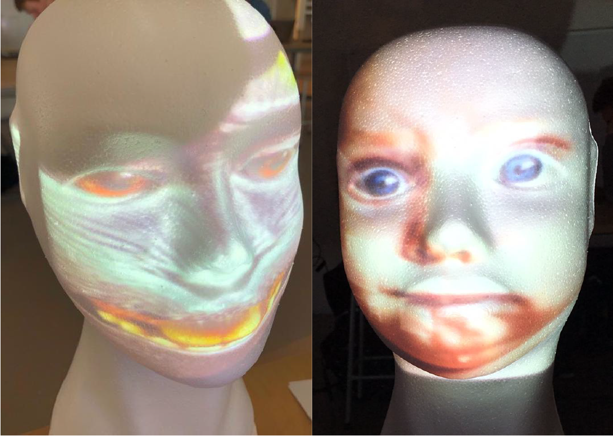

Workshop: Virtual Reality Environments
Assignment
Unreal Engine is een develepment environment, waar je virtual worlds kan creëren. Het is op dit moment de nummer een game software, waar veel AAA games en simulaties in worden gemaakt. Tijdens deze assignments maak ik kennis met Unreal Engine door het creëren van simpele interactieve virtual environments. Tijdens de tweede opdracht wordt er kennis gemaakt met projectie in de software mapping. De software laat je interacteren met de projectie door gebruik te maken van de microfoon in de computer.
Banana Turntable
Het eerste assignment voor Virtual Reality is het maken van een banaan die draait. Dit wordt gemaakt in de software: Unreal Engine.

Banana Collecting
Het tweede assignment voor Virtual Reality is het maken van een game, waar je bananen verzamelt. Dit wordt weer gemaakt in de software: Unreal Engine en is een uitbreiding van het eerste assignment.
Eerst werd er een speler gemaakt in de vorm van een rood blokje.
De speler kon nog door objecten heen lopen. In dit tweede filmpje is dit verholpen.
Als laatste zijn de bananen van de vorige opdracht op het speelveld toegevoegd en kan de speler de bananen verzamelen.
Projectie
Het derde assignment gaat over projectie. Er wordt een projectie gemaakt in de software mapping. De software laat je interacteren met de projectie door gebruik te maken van de microfoon in de computer. Eerst zijn er foto's geprojecteerd op een piepschuimen hoofd.
Daarna is er een filmpje van een kabouter op een piepschuimen paddestoel geprojecteerd.
Als laatste is er een foto van een baby op het piepschuimen hoofd geplaatst en een explosie op een rondje. Deze explosie wordt pas actief als er geluid gemaakt wordt, wat opgevangen wordt door de microfoon in de computer.